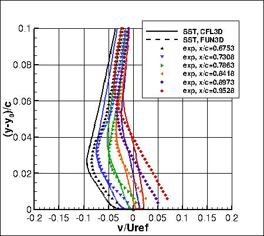
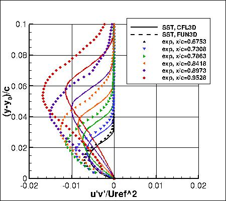
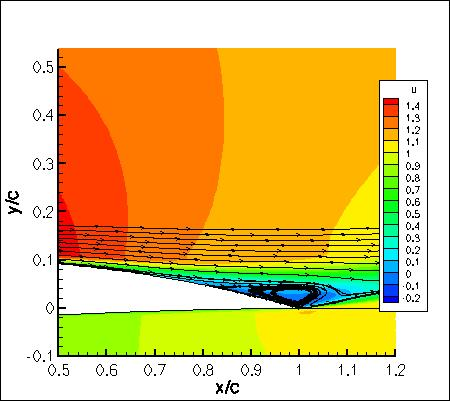
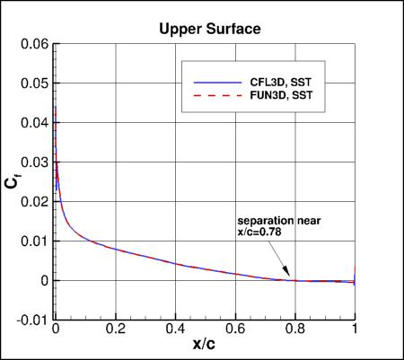
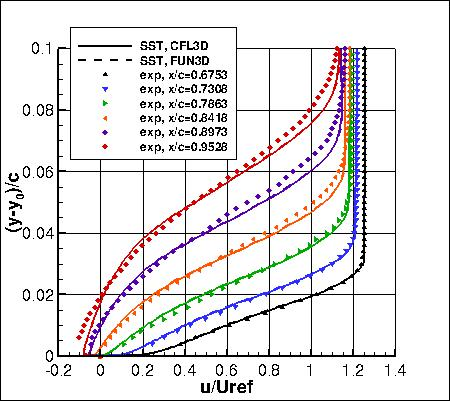
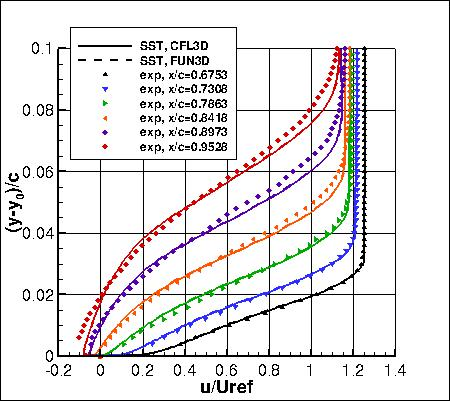

|
Langley Research CenterTurbulence Modeling Resource |
Jump to: SA Results, SA-RC Results, BSLm Results, Wilcox2006-klim-m Results, EASMko2003-S Results, K-e-Rt Results, GLVY-RSM-2012 Results
Return to: 2D NACA 4412 Airfoil Trailing Edge Separation Case Intro Page
Return to: Turbulence Modeling Resource Home Page
2D NACA 4412 Airfoil Trailing Edge Separation Validation Case
SSTm Model Results
Link to SSTm equations




Previously on this page the results were reported as SST solutions, but more properly they should be referred
to as SSTm. Essentially no difference is expected.
Note that thorough
grid studies were not performed for validation cases such as this one.
Some effort was made to ensure reasonable grid resolutions, but there may still be
small noticeable discretization errors. Therefore, these validation results shown should be considered
representative, but not "truth."
The plots shown compare the SSTm results from two independent
CFD codes: CFL3D and FUN3D, along with experimental data.
Uref in the plots has been scaled as described on the
2D NACA 4412 Airfoil Trailing Edge Separation Case Intro Page.
Both CFL3D and FUN3D used freestream turbulence intensity=0.086% and freestream turbulent viscosity (relative to laminar)=0.009
(additional details can be found in the CFL3D User's Manual, Appendix H).
Please read note 5 on Notes on running CFD page.
These results are from the second-finest grid (897x257).
Both codes gave nearly identical results to each other.
On this grid level, standard lift and drag coefficients based on the freestream conditions listed on the Intro
Page were:
It is important to note that the experimental u, v, and u'v' data were nondimensionalized with respect to
a non-traditional velocity at a location only about 1 chord below and behind the airfoil. This is different from a
traditional "freestream" value. As a result, u/Uinf and v/Uinf values from CFD
need to be divided by roughly 0.93 in order to be
comparable to the experimental normalization u/Uref (where Uinf is the usual farfield freestream value
and Uref is the experimental reference location). Similarly, u'v'/(Uinf2) turbulence values from CFD need to be
divided by approximately 0.932. However, the surface pressure coefficients from CFD agree better with
the experiment on the airfoil lower surface when no such correction is made (the matching of the lower surface
Cp is often used as a way to determine whether or not the flow conditions are consistent). The reason for
this inconsistency is not known. Therefore, all comparisons for this case should only be viewed in a
qualitative sense. Neither the surface pressure coefficients nor the surface skin friction coefficients
from the CFD have been adjusted.
See SSTm results on the auxiliary O-grid.
Jump to: SA Results,
SA-RC Results,
BSLm Results,
Wilcox2006-klim-m Results,
EASMko2003-S Results,
K-e-Rt Results,
GLVY-RSM-2012 Results Return to: 2D NACA 4412 Airfoil Trailing Edge Separation Case Intro Page Return to: Turbulence Modeling Resource Home Page
Recent significant updates: Responsible NASA Official:
Ethan Vogel
 

Furthermore,
CFD surface pressure and skin friction coefficients shown in the plots above were based on the freestream conditions.
Note that for this particular case the SSTm model does not converge readily to a
steady-state result when using either of these two codes on this refined grid.
However, the solutions are reasonably steady (quasi-steady) with only very small oscillations
in drag coefficient.
Note that these are compressible code results at "essentially incompressible" conditions of M=0.09.
There may be a very small influence of compressibility.
The data files from CFL3D are given here:
n4412_cfl3d_cp_sst.dat,
n4412_cfl3d_vel_sst.dat,
n4412_cfl3d_uv_sst.dat,
n4412_cfl3d_cfupper_sst.dat.
(Note: the profiles have been interpolated using Tecplot software onto pre-set points, that may or may
not correspond to the actual grid points or grid cells used in the computation.)
A typical CFL3D input file is:
n4412_cfl3d_typical_sst.inp.
A typical FUN3D input file is:
fun3d.nml_typical_sst.
12/17/2018 - added link to SA-RC results page
07/28/2016 - added plot of upper surface Cf as well as CDp and CDv values
03/27/2015 - updated plots to reflect proper y-offest in exp data
03/19/2014 - added link to results on auxiliary O-grid
02/12/2014 - added qualifying statement regarding CL, CD, and Cp
Page Curator:
Clark Pederson
Last Updated: 03/13/2025